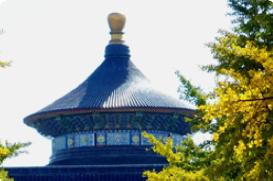
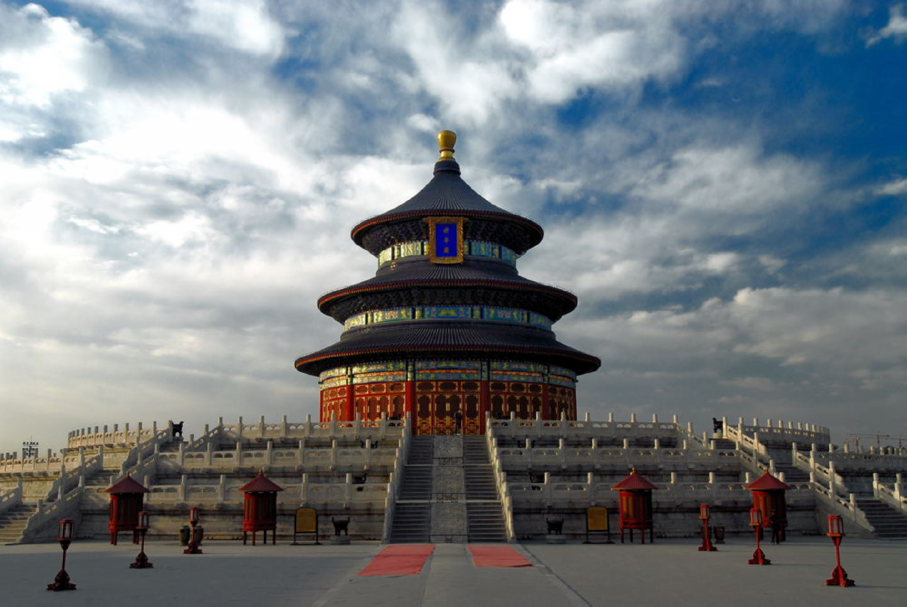
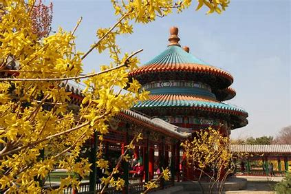
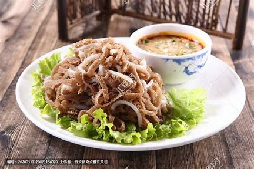
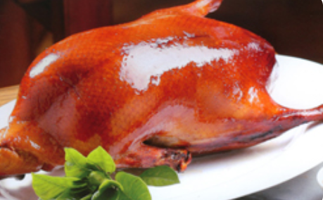
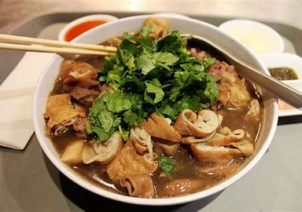

Temple of Heaven - Qianmen Street One Day Tour
Temple of Heaven
The Temple of Heaven is the largest group of sacrificial buildings in the world. The Temple of Heaven has dual walls and walls, divided into two parts: the inner altar and the outer altar. The altar area is circular in the north and square in the south, symbolizing the "round sky and place". The outer altar is 1700 meters long from east to west, 1600 meters wide from north to south, and covers an area of over 270 hectares. The main buildings are concentrated in the inner altar.
Address:
Tiantan Park Management Office, No. 7 Tiantan Neidongli, Dongcheng District, Beijing
Highlights:
The Temple of Heaven was a place for emperors of the Ming and Qing dynasties to offer sacrifices to the heavens and pray for grain. With its profound cultural connotations and magnificent architectural style, it has become a portrayal of ancient Eastern civilization.
- 
- 
- 
Yandaixie Street
In the evening, head to Qianmen Street. Qianmen Street is a famous commercial street in Beijing, located on the south side of Tiananmen Square. It starts from Qianmen Moon Bay in the north and ends at the intersection of Tianqiao in the south, connecting with Tianqiao South Street. With a total length of 845 meters, it is the largest ancient city protection area in Beijing and the only planned commercial block around Tiananmen Square.
Address:
In front of Gulou, Di'anmenwai Street, Beijing
Highlights:
The streets in Beijing are large and square, while the shape of the Yanbagxie Street is like a cigarette bag. The slender streets are like cigarette poles, the east entrance is like a cigarette holder, and the west entrance bends south, looking like a cigarette pot.
-  Cooked Tripe of Sheep or Swine
-  Beijing Duck
-  Stewed Pig Offal
 330445074@qq.com
330445074@qq.com